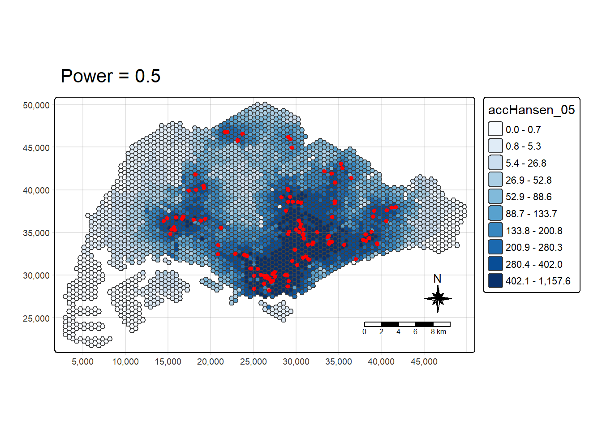
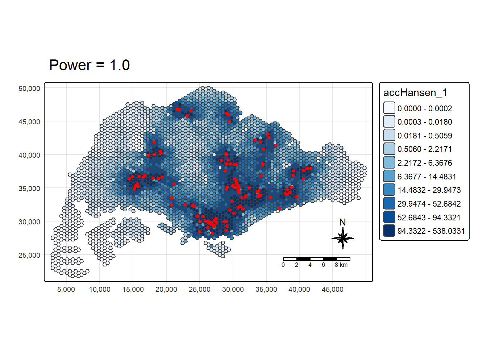
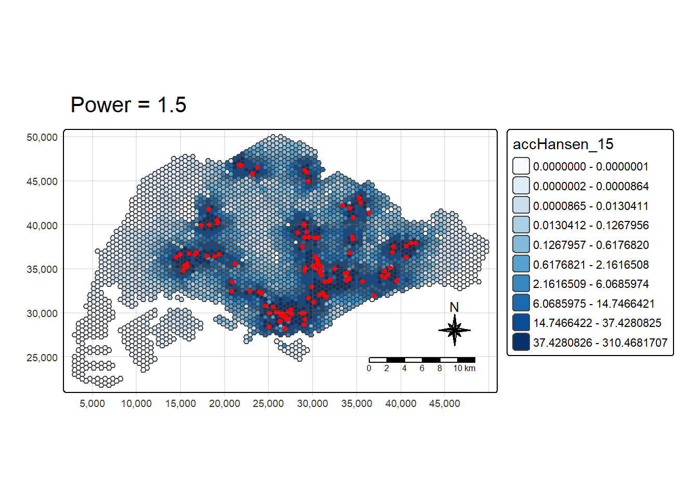
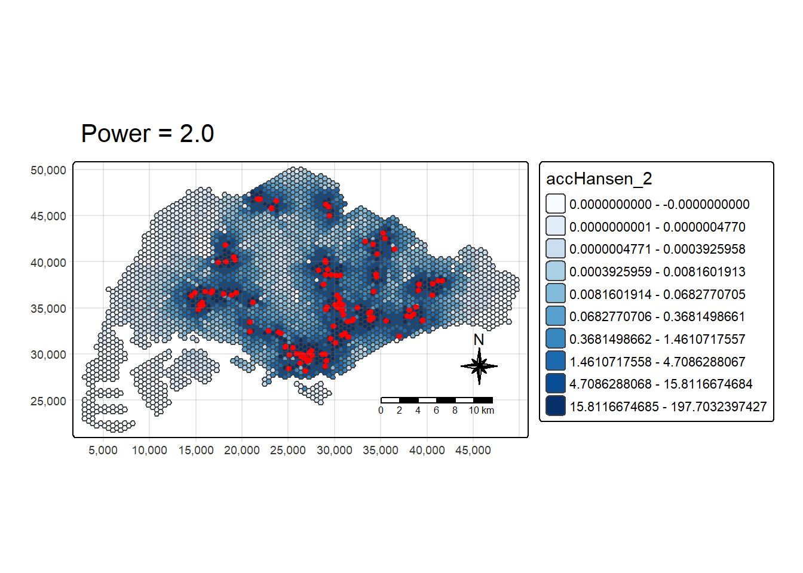
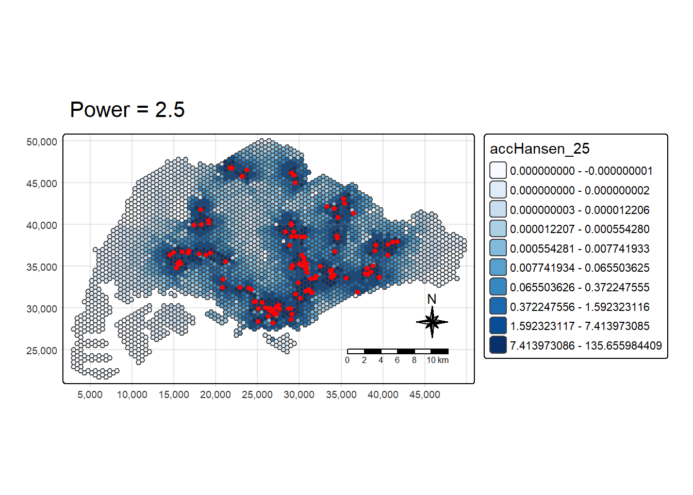

pacman::p_load(tmap, SpatialAcc, sf,
ggstatsplot, reshape2,
tidyverse)In-class Ex09 - Modelling Geographical Accessibility
Introduction
This exercise shows how to model geographical accessibility in R using standard geospatial packages.
We will load, clean, and visualise spatial data, and calculate accessibility using several methods.
The Data
You’ll work with four datasets:
- MP14_SUBZONE_NO_SEA_PL: URA Master Plan 2014 subzones (data.gov.sg)
- hexagons: 250 m radius grid created with sf::st_make_grid()
- ELDERCARE: point layer of eldercare facilities (data.gov.sg)
- OD_Matrix: CSV file with distance and cost values in metres:
- origin_id and destination_id
- entry_cost, network_cost, exit_cost
- total_cost = entry_cost + network_cost + exit_cost
Installing and Loading the R packages
The R packages need for this exercise are as follows:
Spatial data handling
- sf
Modelling geographical accessibility
- spatialAcc
Attribute data handling
- tidyverse, especially readr and dplyr
thematic mapping
- tmap
Staistical graphic
- ggplot2
Statistical analysis
- ggstatsplot
The code chunk below uses p_load() of pacman package to check if the packages are installed in the computer. If they are, then they will be launched into R.
Geospatial Data Wrangling
This section focuses on getting our spatial data ready for analysis. We begin by importing the layers we need, such as the URA subzones, the hexagonal grid that defines our study area, and the eldercare facility locations. These files come in shapefile format and will later be combined to analyse accessibility across Singapore.
Importing Geospatial Data
We start by reading the shapefiles using the sf package in R. Loading them as spatial objects allows us to use them in mapping and analysis. It is also a good practice to check that each file has been imported correctly and that its geometry type is properly recognised.
mpsz <- st_read(dsn = "data/geospatial", layer = "MP14_SUBZONE_NO_SEA_PL")Reading layer `MP14_SUBZONE_NO_SEA_PL' from data source
`C:\Users\zongy\OneDrive\Desktop\SMU\ISSS626 - Geospatial Analytics\zongyin-tan\ISSS626-Geospatial-zytan\In-class_Ex\In-class_Ex09\data\geospatial'
using driver `ESRI Shapefile'
Simple feature collection with 323 features and 15 fields
Geometry type: MULTIPOLYGON
Dimension: XY
Bounding box: xmin: 2667.538 ymin: 15748.72 xmax: 56396.44 ymax: 50256.33
Projected CRS: SVY21hexagons <- st_read(dsn = "data/geospatial", layer = "hexagons") Reading layer `hexagons' from data source
`C:\Users\zongy\OneDrive\Desktop\SMU\ISSS626 - Geospatial Analytics\zongyin-tan\ISSS626-Geospatial-zytan\In-class_Ex\In-class_Ex09\data\geospatial'
using driver `ESRI Shapefile'
Simple feature collection with 3125 features and 6 fields
Geometry type: POLYGON
Dimension: XY
Bounding box: xmin: 2667.538 ymin: 21506.33 xmax: 50010.26 ymax: 50256.33
Projected CRS: SVY21 / Singapore TMeldercare <- st_read(dsn = "data/geospatial", layer = "ELDERCARE") Reading layer `ELDERCARE' from data source
`C:\Users\zongy\OneDrive\Desktop\SMU\ISSS626 - Geospatial Analytics\zongyin-tan\ISSS626-Geospatial-zytan\In-class_Ex\In-class_Ex09\data\geospatial'
using driver `ESRI Shapefile'
Simple feature collection with 120 features and 19 fields
Geometry type: POINT
Dimension: XY
Bounding box: xmin: 14481.92 ymin: 28218.43 xmax: 41665.14 ymax: 46804.9
Projected CRS: SVY21 / Singapore TMUpdating CRS Information
To make sure every dataset aligns correctly on the map, we convert them all to the same coordinate reference system, which is SVY21 (EPSG:3414). This ensures that all coordinates are using the same reference and can be compared accurately. After converting, we confirm that the transformation has worked as expected.
mpsz <- st_transform(mpsz, 3414)
eldercare <- st_transform(eldercare, 3414)
hexagons <- st_transform(hexagons, 3414)
st_crs(mpsz)Coordinate Reference System:
User input: EPSG:3414
wkt:
PROJCRS["SVY21 / Singapore TM",
BASEGEOGCRS["SVY21",
DATUM["SVY21",
ELLIPSOID["WGS 84",6378137,298.257223563,
LENGTHUNIT["metre",1]]],
PRIMEM["Greenwich",0,
ANGLEUNIT["degree",0.0174532925199433]],
ID["EPSG",4757]],
CONVERSION["Singapore Transverse Mercator",
METHOD["Transverse Mercator",
ID["EPSG",9807]],
PARAMETER["Latitude of natural origin",1.36666666666667,
ANGLEUNIT["degree",0.0174532925199433],
ID["EPSG",8801]],
PARAMETER["Longitude of natural origin",103.833333333333,
ANGLEUNIT["degree",0.0174532925199433],
ID["EPSG",8802]],
PARAMETER["Scale factor at natural origin",1,
SCALEUNIT["unity",1],
ID["EPSG",8805]],
PARAMETER["False easting",28001.642,
LENGTHUNIT["metre",1],
ID["EPSG",8806]],
PARAMETER["False northing",38744.572,
LENGTHUNIT["metre",1],
ID["EPSG",8807]]],
CS[Cartesian,2],
AXIS["northing (N)",north,
ORDER[1],
LENGTHUNIT["metre",1]],
AXIS["easting (E)",east,
ORDER[2],
LENGTHUNIT["metre",1]],
USAGE[
SCOPE["Cadastre, engineering survey, topographic mapping."],
AREA["Singapore - onshore and offshore."],
BBOX[1.13,103.59,1.47,104.07]],
ID["EPSG",3414]]Cleaning and Updating Attribute Fields
Next, we clean up the datasets by keeping only the necessary columns. We also create two additional fields to support our analysis. The first is capacity, which shows how much service an eldercare centre can provide. The second is demand, which reflects the level of need in each hexagon.
For this exercise, both values are set to 100 as placeholders. In a real-world project, they would be based on actual data such as population or service capacity.
eldercare <- eldercare %>%
select(fid, ADDRESSPOS) %>%
mutate(capacity = 100)
hexagons <- hexagons %>%
select(fid) %>%
mutate(demand = 100)Aspatial Data Handling and Wrangling
Here, we prepare the non-spatial dataset known as the Origin-Destination (OD) matrix. This dataset records the travel distances between every demand location and every eldercare facility. It is an essential input for accessibility modelling since it tells us how far people must travel to reach each service.
Importing Distance Matrix
We load the OD matrix from a CSV file. Each record represents a pair of points: an origin (a hexagon) and a destination (an eldercare centre). The matrix includes the total travel distance between them, measured in metres. This gives us a full picture of how connected different parts of the study area are to eldercare services.
ODMatrix <- read_csv("data/aspatial/OD_Matrix.csv", skip = 0)
ODMatrix# A tibble: 375,000 × 6
origin_id destination_id entry_cost network_cost exit_cost total_cost
<dbl> <dbl> <dbl> <dbl> <dbl> <dbl>
1 1 1 668. 19847. 47.6 20562.
2 1 2 668. 45027. 31.9 45727.
3 1 3 668. 17644. 173. 18486.
4 1 4 668. 36010. 92.2 36770.
5 1 5 668. 31068. 64.6 31801.
6 1 6 668. 31195. 117. 31980.
7 1 8 668. 32475. 55.1 33198.
8 1 9 668. 22267. 28.4 22963.
9 1 10 668. 45220. 55.1 45943.
10 1 11 668. 34898. 27.5 35593.
# ℹ 374,990 more rowsTidying Distance Matrix
The imported data starts in a long format, meaning that each row shows one origin and one destination. For modelling, we need it in a wide format, where each row represents one origin and each column represents one destination. The value inside each cell shows the distance between them.
distmat <- ODMatrix %>%
select(origin_id, destination_id, total_cost) %>%
spread(destination_id, total_cost)%>%
select(c(-c('origin_id')))After restructuring, we convert the distances from metres to kilometres to make the numbers easier to interpret.
distmat_km <- as.matrix(distmat/1000)Modelling and Visualising Accessibility using Hansen Method
The Hansen method is a classic way to measure accessibility. It looks at both the number of available services and their distance from the population. Areas that are close to many facilities will have higher accessibility scores, while areas that are far away will have lower scores.
Computing Hansen’s Accessibility
We calculate accessibility using the SpatialAcc package. The function takes into account the demand, the capacity of eldercare centres, and the distance matrix. It produces an accessibility score for each hexagon. These scores are then joined back to the spatial grid so that they can be visualised on a map.
acc_Hansen <- data.frame(ac(hexagons$demand,
eldercare$capacity,
distmat_km,
#d0 = 50,
power = 2,
family = "Hansen"))
colnames(acc_Hansen) <- "accHansen"
acc_Hansen <- as_tibble(acc_Hansen)
hexagon_Hansen <- bind_cols(hexagons, acc_Hansen)The default field name is very messy, we will rename it to accHansen by using the code chunk below.
colnames(acc_Hansen) <- "accHansen"
acc_Hansen# A tibble: 3,125 × 1
accHansen
<dbl>
1 1.65e-14
2 1.10e-16
3 3.87e-17
4 1.48e-17
5 1.05e-17
6 5.08e-18
7 1.77e-13
8 9.98e-14
9 5.67e-14
10 2.62e-14
# ℹ 3,115 more rowsNext, we will convert the data table into tibble format by using the code chunk below.
acc_Hansen <- as_tibble(acc_Hansen)Lastly, bind_cols() of dplyr will be used to join the acc_Hansen tibble data frame with the hexagons simple feature data frame. The output is called hexagon_Hansen.
hexagon_Hansen <- bind_cols(hexagons, acc_Hansen)
hexagon_HansenSimple feature collection with 3125 features and 3 fields
Geometry type: POLYGON
Dimension: XY
Bounding box: xmin: 2667.538 ymin: 21506.33 xmax: 50010.26 ymax: 50256.33
Projected CRS: SVY21 / Singapore TM
First 10 features:
fid demand accHansen geometry
1 1 100 1.648313e-14 POLYGON ((2667.538 27506.33...
2 2 100 1.096143e-16 POLYGON ((2667.538 25006.33...
3 3 100 3.865857e-17 POLYGON ((2667.538 24506.33...
4 4 100 1.482856e-17 POLYGON ((2667.538 24006.33...
5 5 100 1.051348e-17 POLYGON ((2667.538 23506.33...
6 6 100 5.076391e-18 POLYGON ((2667.538 23006.33...
7 7 100 1.769616e-13 POLYGON ((3100.551 28756.33...
8 8 100 9.979647e-14 POLYGON ((3100.551 28256.33...
9 9 100 5.671831e-14 POLYGON ((3100.551 27756.33...
10 10 100 2.621063e-14 POLYGON ((3100.551 27256.33...Actually, the steps above can be perform by using a single code chunk as shown below.
acc_Hansen <- data.frame(ac(hexagons$demand,
eldercare$capacity,
distmat_km,
#d0 = 50,
power = 0.5,
family = "Hansen"))
colnames(acc_Hansen) <- "accHansen"
acc_Hansen <- as_tibble(acc_Hansen)
hexagon_Hansen <- bind_cols(hexagons, acc_Hansen)acc_Hansen_05 <- data.frame(ac(hexagons$demand,
eldercare$capacity,
distmat_km,
power = 0.5,
family = "Hansen"))
colnames(acc_Hansen_05) <- "accHansen_05"
acc_Hansen_05 <- as_tibble(acc_Hansen_05)
hexagon_Hansen_05 <- bind_cols(hexagons, acc_Hansen_05)mapex <- st_bbox(hexagons)
tmap_mode("plot")
plot1 <- tm_shape(hexagon_Hansen_05, bbox = mapex) +
tm_polygons(fill = "accHansen_05",
fill.scale = tm_scale_intervals(style="quantile", n=10, values="brewer.blues")) +
tm_shape(eldercare) + tm_dots(size=0.3, fill="red", col="black") +
tm_title("Power = 0.5") + tm_layout(frame=TRUE) +
tm_compass(type="8star", size=2) + tm_scalebar(position=c("right","bottom")) +
tm_grid(alpha=0.2)
plot1
acc_Hansen_1 <- data.frame(ac(hexagons$demand,
eldercare$capacity,
distmat_km,
power = 1,
family = "Hansen"))
colnames(acc_Hansen_1) <- "accHansen_1"
acc_Hansen_1 <- as_tibble(acc_Hansen_1)
hexagon_Hansen_1 <- bind_cols(hexagons, acc_Hansen_1)plot2 <- tm_shape(hexagon_Hansen_1, bbox = mapex) +
tm_polygons(fill = "accHansen_1",
fill.scale = tm_scale_intervals(style="quantile", n=10, values="brewer.blues")) +
tm_shape(eldercare) + tm_dots(size=0.3, fill="red", col="black") +
tm_title("Power = 1.0") + tm_layout(frame=TRUE) +
tm_compass(type="8star", size=2) + tm_scalebar(position=c("right","bottom")) +
tm_grid(alpha=0.2)
plot2
acc_Hansen_15 <- data.frame(ac(hexagons$demand,
eldercare$capacity,
distmat_km,
power = 1.5,
family = "Hansen"))
colnames(acc_Hansen_15) <- "accHansen_15"
acc_Hansen_15 <- as_tibble(acc_Hansen_15)
hexagon_Hansen_15 <- bind_cols(hexagons, acc_Hansen_15)plot3 <- tm_shape(hexagon_Hansen_15, bbox = mapex) +
tm_polygons(fill = "accHansen_15",
fill.scale = tm_scale_intervals(style="quantile", n=10, values="brewer.blues")) +
tm_shape(eldercare) + tm_dots(size=0.3, fill="red", col="black") +
tm_title("Power = 1.5") + tm_layout(frame=TRUE) +
tm_compass(type="8star", size=2) + tm_scalebar(position=c("right","bottom")) +
tm_grid(alpha=0.2)
plot3
acc_Hansen_2 <- data.frame(ac(hexagons$demand,
eldercare$capacity,
distmat_km,
power = 2,
family = "Hansen"))
colnames(acc_Hansen_2) <- "accHansen_2"
acc_Hansen_2 <- as_tibble(acc_Hansen_2)
hexagon_Hansen_2 <- bind_cols(hexagons, acc_Hansen_2)plot4 <- tm_shape(hexagon_Hansen_2, bbox = mapex) +
tm_polygons(fill = "accHansen_2",
fill.scale = tm_scale_intervals(style="quantile", n=10, values="brewer.blues")) +
tm_shape(eldercare) + tm_dots(size=0.3, fill="red", col="black") +
tm_title("Power = 2.0") + tm_layout(frame=TRUE) +
tm_compass(type="8star", size=2) + tm_scalebar(position=c("right","bottom")) +
tm_grid(alpha=0.2)
plot4
acc_Hansen_25 <- data.frame(ac(hexagons$demand,
eldercare$capacity,
distmat_km,
power = 2.5,
family = "Hansen"))
colnames(acc_Hansen_25) <- "accHansen_25"
acc_Hansen_25 <- as_tibble(acc_Hansen_25)
hexagon_Hansen_25 <- bind_cols(hexagons, acc_Hansen_25)plot5 <- tm_shape(hexagon_Hansen_25, bbox = mapex) +
tm_polygons(fill = "accHansen_25",
fill.scale = tm_scale_intervals(style="quantile", n=10, values="brewer.blues")) +
tm_shape(eldercare) + tm_dots(size=0.3, fill="red", col="black") +
tm_title("Power = 2.5") + tm_layout(frame=TRUE) +
tm_compass(type="8star", size=2) + tm_scalebar(position=c("right","bottom")) +
tm_grid(alpha=0.2)
plot5